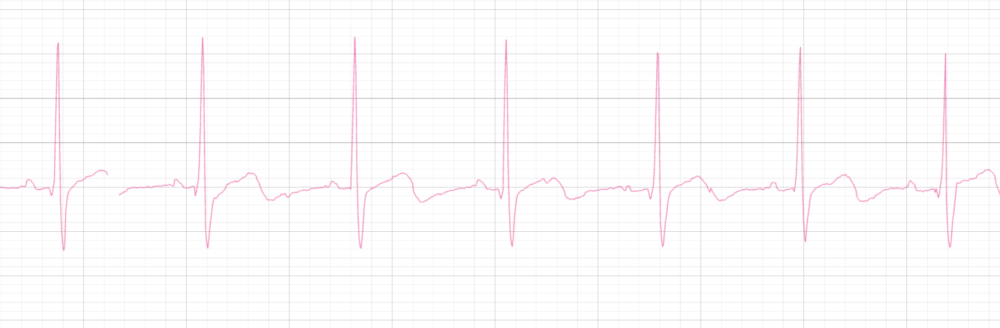
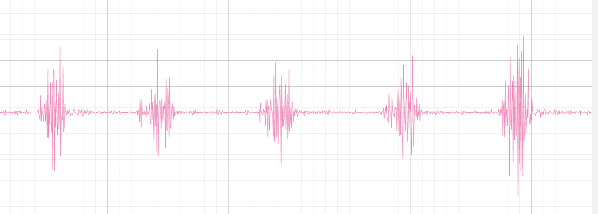

Chords-Java#
Ringkasan#
Chords Java adalah proyek berbasis Java open-source untuk memperoleh, memvisualisasikan, dan streaming sinyal bio-potensial real-time seperti ECG, EMG, EEG, dan EOG dari perangkat keras BioAmp. Dibangun dengan JavaFX dan mendukung LSL (Lab Streaming Layer), ini menyediakan antarmuka yang andal dan low-latency untuk penelitian, prototyping, dan neuroscience pendidikan.
Fitur#
Persyaratan Perangkat Lunak#
Java Development Kit (JDK 17+) – Diperlukan untuk mengkompilasi dan menjalankan aplikasi
VS Code atau IDE yang kompatibel Java
jSerialComm (sudah dibundel di repo)
Arduino IDE - Diperlukan untuk mengunggah firmware ke papan arduino
Chords-LSL-Visualizer - untuk streaming LSL langsung data
Persyaratan Perangkat Keras#
Untuk menggunakan Chords-Java, Anda memerlukan:
Papan pengembangan yang menjalankan Chords Arduino Firmware
Kabel USB
Perangkat Keras BioAmp dan aksesori (seperti elektroda)
Menyiapkan Perangkat Keras#
Hubungkan rantai sinyal BioAmp Anda:
Hubungkan elektroda gel atau elektroda kering sesuai dengan jenis sinyal yang diukur, seperti ECG atau EMG. Untuk panduan penempatan detail kunjungi.
Pasang Perangkat Keras BioAmp ke papan pengembangan (mis., Arduino UNO R4, ESP32, dll.).
Hubungkan papan ke laptop Anda melalui USB.
Unggah firmware (dengan baud rate dan protokol yang benar) menggunakan Arduino IDE.
Mengunggah Firmware#
Pergi ke repo Chords Arduino Firmware.
Temukan papan Anda di tabel papan yang didukung.
Salin dan tempel sketch ke Arduino IDE.
Pilih papan dan COM port yang benar di bawah Tools.
Unggah kode.
Menggunakan Chords-Java#
Untuk meluncurkan dan menjalankan proyek Java:
Unduh Repositori:
Kunjungi Repositori GitHub Chords-Java
Atau gunakan Git Bash.
git clone https://github.com/upsidedownlabs/Chords-Java.gitNavigasi ke folder proyek:
Buka Windows Terminal dengan
Win + Xdan pilih Windows Terminal dari menu. Atau, tekanWin + S, ketik Windows Terminal, dan tekan Enter.Gunakan perintah
cd(change directory) untuk pergi ke folder tempat proyek Anda berada. Sebagai contoh:
cd "C:\Users\YourName\Downloads\Chords-Java"
Ganti path contoh dengan path aktual ke direktori proyek Anda.
Kompilasi dan Jalankan:
Untuk Kompilasi - Gunakan perintah berikut untuk mengkompilasi kode:
javac -d bin -cp "lib/*" src/ChordsUSB.java examples/ChordsLSLStreamer.javaGunakan perintah berikut untuk menjalankan kode:
java '-Djna.library.path=lib' -cp "bin;lib/*" ChordsLSLStreamer
Streaming LSL#
Untuk streaming data ke alat seperti Chords LSL Visualizer:
Unggah firmware dengan dukungan LSL.
Jalankan kelas
ChordsLSLStreamer.java.Pastikan PC Anda dapat mendeteksi perangkat USB.
Stream bernama
Chords_USB_Streamakan muncul di alat LSL Anda ketika Anda klikRefresh.Mulai stream dan visualisasikan data langsung.
Note
Streaming LSL penting untuk menjalankan aplikasi dan alat lintas platform.
Aplikasi#
1. Elektrokardiografi (ECG)#

Menampilkan waveform ECG real-time
2. Elektromiografi (EMG)#

Memvisualisasikan sinyal EMG yang difilter dan envelope yang halus
Mendeteksi aktivitas otot secara real-time
Mendukung penyesuaian halus jendela RMS dan parameter filtering